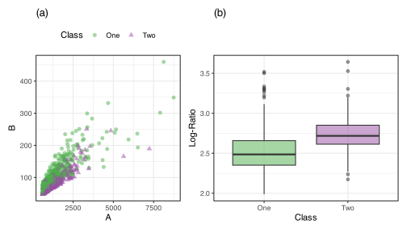
8 Interactions and Nonlinear Features
We saw in previous chapters that preprocessing is necessary because models can be sensitive to specific predictor characteristics. For instance, some models:
- are sensitive to highly correlated predictors.
- cannot consume qualitative predictors as non-numeric data.
- cannot be built when predictors have no or near-zero variability.
Preprocessing methods address aspects of the predictors that place them in a form so that models can be built. This is what the model needs to function.
While preprocessing techniques allow models to be built, they do not necessarily transform them in ways that help the model to identify predictive relationships with the outcome. This is the fundamental concept of feature engineering which addresses the question: what can we do to make it easier for the model to understand and predict the outcome.
In this chapter we will discuss techniques that address this question. For example, if the relationship between a predictor is nonlinear, how can we represent that predictor so that the relationship can be modeled? Or if two predictors work in conjunction with each other, then how can this information be engineered for a model? While feature engineering is not necessary for models to be built, it contains a crucial set of tools for improving model performance.
Let’s look at a simple example. Occasionally, predictor pairs work better in unison rather than as main effects. For example, consider the data in Figure fig-two-class-corr(a), where two predictors are:
- strictly positive,
- significantly right-skewed, and
- highly correlated.
In the predictors’ original form, there is a significant overlap between the two classes of samples. However, when the ratio of the predictors is used, the newly derived predictor better discriminates between classes (shown in Figure fig-two-class-corr(b)). While not a general rule, the three data characteristics above suggest that the modeler attempts to form ratios from two or more predictors 1.
It is essential to understand that these data require transformation. We can put the original predictors into a model as-is. The model won’t produce an error but won’t have good predictive performance. We can induce a separation of the classes when a joint feature is used.
This aspect of feature engineering depends on the data set so it is difficult to enumerate all possible techniques. In this chapter, we’ll describe a few commonly used methods: splines, interactions, and discretization (a.k.a. binning).
8.1 Interactions
When building models for prediction, the majority of variation in the outcome is generally explained by the cumulative effect of the important individual predictors. For many problems, additional variation in the response can be explained by the effect of two or more predictors working in conjunction with each other.
The healthcare industry has long understood the concept of interactions among drugs for treating specific diseases Altorki et al. (2021). As an example of an interaction, consider treatment for the disease non-small cell lung cancer (NSCLC). In a recent study, patients with an advanced stage of NSCLC with an EGFR mutation were given either osimertinib alone or osimertinib in combination with traditional chemotherapy (Planchard et al. 2023). Patients taking the combination treatment had a significantly longer progression-free survival time than patients taking osimertinib alone. Hence, the interaction of the treatments is more effective than the single treatment. To summarize, two (or more) predictors interact if their combined impact is different (less or greater) than what would be expected from the added impact of each predictor alone.
We’ve already encountered an example of an interaction in sec-eda-whole-game where the relationship between delivery time and the time of order differed across days of the week. This trend is reproduced in Figure fig-delivery-no-interact(a). The telltale sign of the interaction is that the trendlines are not parallel with one another; they have different rates of increase and cross.
How would this plot change if there was no interaction between the order time and day? To illustrate, we estimated trendlines in a way that coerced the nonlinear trend for order time to be the same. Figure fig-delivery-no-interact(b) shows the results: parallel lines for each day of the week.
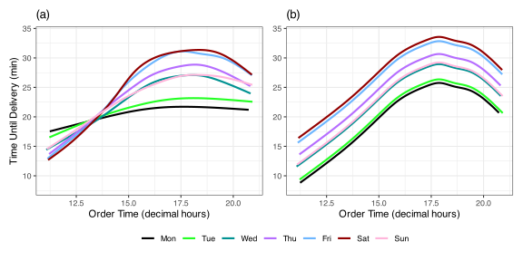
This example demonstrates an interaction between a numeric predictor (hour of order) and a categorical predictor (day of the week). Interactions can also occur between two (or more) numeric or categorical predictors. Using the delivery data, let’s examine potential interactions solely between categorical predictor columns.
For regression problems, one visualization technique is to compute the means (or medians) of the outcome for all combinations of variables and then plot these means in a manner similar to the previous figure. Let’s look at the 27 predictors columns for whether a specific item was included in the order. The original column contains counts, but the data are mostly zero or one. We’ll look at two variables at a time and plot the four combinations of whether the item was ordered at all (versus not at all). Figure fig-delivery-items shows two potential sets of interactions. The x-axis indicates whether Item 1 was in the order or not. The y-axis is the mean delivery time with 90% confidence intervals2.
The left panel shows the joint effect of items 1 and 9. The lines connecting the means are parallel. This indicates that each of these two predictors affects the outcome independently of one another. Specifically, the incremental change in delivery time is the same when item 9 is or is not included with item 1. The right panel has means for items 1 and 10. The mean delivery times are very similar when neither is contained in the order. Also, when only one of the two items is in the order, the average time is similarly small. However, when both are included, the delivery time becomes much larger. This means that you cannot consider the effect or either item 1 or 10 alone; their effect on the outcome occurs jointly.
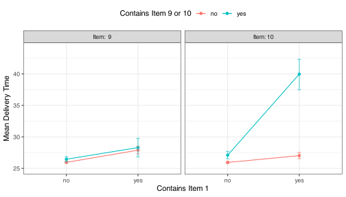
As a third example, interactions may occur between continuous predictors. It can be difficult to discover the interaction via visualization for two numeric predictors without converting one of the predictors to categorical bins. To illustrate the concept of an interaction between two numeric predictors, \(x_1\) and \(x_2\), let’s use a simple linear equation:
\[ y = \beta_0 + \beta_{1}x_1 + \beta_{2}x_2 + \beta_{3}x_{1}x_{2} + \epsilon \tag{8.1}\]
The \(\beta\) coefficients represent the overall average response (\(\beta_0\)), the average rate of change for each individual predictor (\(\beta_1\) and \(\beta_2\)), and the incremental rate of change due to the combined effect of \(x_1\) and \(x_2\) (\(\beta_3\)) that goes beyond what \(x_1\) and \(x_2\) can explain alone. The parameters for this equation can be estimated using a technique such as ordinary least squares (REF). The sign and magnitude of \(\beta_3\) indicate how and the extent to which the two predictors interact:
- When \(\beta_3\) is positive, the interaction is synergistic since the response increases beyond the effect of either predictor alone.
- Alternatively, when \(\beta_3\) is negative, the interaction is antagonistic since the response decreases beyond the effect of either predictor alone.
- A third scenario is when \(\beta_3\) is essentially zero. In this case, there is no interaction between the predictors and the relationship between the predictors is additive.
- Finally, for some data sets, we may find that neither predictor is important individually (i.e., \(\beta_1\) and \(\beta_2\) are zero). However, the coefficient on the interaction term is not zero. Because this case occurs very infrequently, it is called atypical.
To understand this better, Figure fig-interaction-contours shows a contour plot of a predicted linear regression model with various combinations of the model slope parameters. The two predictors are centered at zero with values ranging within \(x_j \pm 4.0\)). The default setting shows a moderate synergistic interaction effect since all of the \(\beta_j = 1.0\)). In the plot, darker values indicate smaller predicted values.
#| label: shiny-interaction-contours
#| viewerHeight: 600
#| standalone: true
library(shiny)
library(ggplot2)
library(bslib)
library(viridis)
source("https://raw.githubusercontent.com/aml4td/website/main/R/shiny-setup.R")
source("https://raw.githubusercontent.com/aml4td/website/main/R/shiny-interaction-contours.R")
appInteraction effects between predictors are sometimes confused with correlation between predictors. They are not the same thing. Interactions are defined by their relationship to the outcome while between-predictors correlations are unrelated to it. An interaction could occur independent of the amount of correlation between predictors.
8.1.1 How Likely are Interactions?
Within the context of statistical experimental design, Hamada and Wu (1992) discuss some probabilistic aspects of predictor importance. The effect sparsity principle is that there are often few predictors that are relevant for predicting the outcome. Similarly, the effect hierarchy principle states that “main effects” (i.e. a feature involving only predictor) are more likely to occur than interactions. Also, as more predictors are involved in the interaction, the less likely they become. Finally, the heredity principle conjectures that if an interaction is important, it is very likely that the corresponding main effects are likely too. Chipman (1996) further expands this principle.
The original context of these principles was envisioned for screening large numbers of predictors in experimental designs; they are still very relevant for the analysis of tabular data.
8.1.2 Detecting Interactions
An ideal scenario would be that we would know which predictors interact before modeling the data. If this would be the case, then these terms could be included in a model. This would be ideal because the model could more easily find the relationship with the response, thus leading to better predictive performance. Unfortunately, knowledge of which predictors interact is usually not available prior to initiating the modeling process.
If meaningful interactions are unknown before modeling, can models still discover and utilize these potentially important features? Recent studies using various advanced modeling techniques have shown that some methods can inherently detect interactions. For example, tree-based models (Elith, Leathwick, and Hastie 2008), random forests (García-Magariños et al. 2009), boosted trees (Lampa et al. 2014), and support vector machines (Chen et al. 2008) are effective at uncovering them.
If modern modeling techniques can naturally find and utilize interactions, then why is it necessary to spend any time uncovering these relationships? The first reason is to improve interpretability. Recall the trade-off between prediction and interpretation that was discussed in Section TODO. More complex models are less interpretable and generally more predictive, while simpler models are more interpretable and less predictive. Therefore, if we know which interaction(s) are important, we can include these in a simpler model to enable a better interpretation. A second reason to spend time uncovering interactions is to help improve the predictive performance of models.
What should we do if we have a candidate set of interactions? If we are using a more formal statistical model, such as linear or logistic regression, the traditional tool for evaluating whether additional model terms in a set of nested models are worth including is the conventional analysis of variance (ANOVA). This uses the statistical likelihood value as the objective function, which is equivalent to comparing the RMSE values between models for linear regression 3. The error reduction and how many additional terms are responsible for the improvement are computed. Using these results and some probability assumptions about the data, we can formally test the null hypothesis that the additional parameters all have coefficient values of zero.
Looking at the delivery data, our model in sec-model-development-whole-game included a single set of interactions (e.g., hour-by-day). What if we included one more interaction: item 1 \(\times\) item 10? Table tbl-interaction-anova shows the ANOVA results. The RMSE computed on the training set is listed in the first and second columns. The reduction by including this additional model term is 0.18 (decimal minutes). Assuming normality of the model residuals, the p-value for this test is exceedingly small. This indicates that there is no evidence that this parameter is truly zero. In other words, there is strong evidence that the inclusion of the interaction helps explain the response. This statistical difference may not make much of a practical difference. However, machine learning models often behave like “a game of inches” where every small improvement adds up to an overall improvement that matters.
| Interactions | Decimal | Time | Deg. Free. | p-Value | MAE | RMSE |
|---|---|---|---|---|---|---|
| Hour x Day | 2.30 | (2m, 17s) | 5,890 | 1.61 | 2.29 | |
| Add One Item Interaction | 2.12 | (2m, 6s) | 5,889 | 10-219.8 | 1.56 | 2.10 |
| Add All Item Interactions | 2.06 | (2m, 3s) | 5,539 | 10-18.4 | 1.60 | 2.13 |
What about the other two-way interactions between the other item predictors? Since the training set is fairly large (compared to the current number of model parameters), it is feasible to include the remaining 350 pairwise interactions and use the ANOVA method to validate this choice. These results are contained in the third row of Table tbl-interaction-anova where the RMSE dropped further by 0.05 minutes. The p-value is also very small, indicating that there is no evidence that all of the 350 parameter estimates are zero. More extensive testing would be required to determine which actually are zero. This can be tedious and a potentially dangerous “fishing expedition” that could result in serious bias creeping into the modeling process.
One problem with the ANOVA method is that it calculates the model error using the training set, which we know may not indicate what would occur with previously unseen data. In fact, it is well known that, for linear regression via ordinary least squares estimation, it is impossible for the training set error to ever increase when adding new model terms. Therefore, was the drop in RMSE when all interactions were included due to this fact? Or was it due to other important interactions that were included? To understand this we can turn to the validation set to provide confirmation. You can see this in Table tbl-interaction-anova where the validation set RMSE and MAE values are included. Note that, when the large set of interactions were added, these metrics both increase in the validation set, a result contrary to what the ANOVA results tell us.
The observed and predicted visualizations for each model in Table tbl-interaction-anova are shown in Figure fig-lin-reg-interactions. Adding the additional interaction yielded a slight numerical improvement. However, the visualization in the middle panel shows fewer very large residuals. The figure also shows the model results that include the full set of 351 two-way interactions; this panel shows no significant reduction in large residuals, further casting doubt on using the entire set.

So far, we have used visualizations to unearth potential interactions. This can be an effective strategy when the number of potential interactions is large, but the visual nature of this process is subjective. There are some specialized quantitative tools for identifying interactions. For example, Lim and Hastie (2015) used regularized generalized linear models (sections TODO) to estimate all possible two-way interactions and use a penalization method to determine which should be retained. Miller (1984) and Kuhn and Johnson (2019) (Section 7.4.3) describe the feasible solution algorithm, an iterative search method for interaction discovery. Another, which we will now describe in more detail, is Friedman’s H-statistic (Friedman and Popescu 2008).
We can estimate the joint effect of a set of predictors on the outcome as well as the effect of individual predictors. If we thought that only main effects and two-factor interactions were possible, we could factor out the individual effects from the joint effect. The leftover predictive ability would then be due to interactions. Consider the linear model in Equation eq-two-way-int. The joint effect would include all possible model terms associated with a predictor. We can also create main effects too:
\[\begin{align} f(x_1, x_2) &= \beta_{1}x_1 + \beta_{2}x_2 + \beta_{3}x_{1}x_{2} \notag \\ f(x_1) &= \beta_{1}x_1 \notag \\ f(x_2) &= \beta_{2}x_2 \notag \end{align}\]
To isolate the potential interaction effect:
\[ f(x_1\times x_2) = f(x_1, x_2) - f(x_1) - f(x_2) = \beta_{3}x_{1}x_{2} \tag{8.2}\]
This shows that, for this situation, we can isolate the effect of an interaction by removing any other systematic effects in the data4. Equation eq-int-isolate is based on a simple parametric linear model. For models with more complex prediction equations, we can’t analytically pick out which model parameters should be used to investigate potential interactions.
However, for any model, the joint and marginal effects can be quantified using partial dependence profiles (PDP) (Molnar (2020), Section 8.1). First, we determine a sequence of values covering the observed range of the predictor(s) of interest. Then we randomly sample a data point, perhaps from the training set, and over-ride the value of the predictor of interest with values from the grid. This produces a prediction profile over the grid. We can repeat this process many times to approximate \(f(\cdot)\) by averaging the multiple prediction values for each grid point.
Figure fig-ensemble-pdp visualizes the PDP data derived from using the ensembles of regression trees for \(f(hour)\), \(f(day)\), and \(f(hour, day)\). The first panel shows the random realizations of the relationship between delivery time and order hour from 1,000 randomly sampled rows of the training set. The results are unsurprising; we can see a similarity between these results and the initial visualizations in Figure fig-delivery-predictors. The single trend line in panel (b) is the average of these profiles for each value of the predictor (delivery hour). There appears to be, on average, a nonlinear effect of the delivery hour. The day of the week is an informative predictor and the joint effect profile in panel (d) shows that its effect induces different patterns in the delivery hour. If this were not the case, the patterns in panels (b) and (c) would, when combined, approximate the pattern in panel (d).

Friedman’s H-statistic can quantify the effect of interaction terms using partial dependence profiles. When investigating two-factor interactions between predictors \(j\) and \(j'\), the statistic is
\[ H^2_{jj'}=\frac{\sum_\limits{i=1}^B\left[\hat{f}(x_{ij},x_{ij'})-\hat{f}(x_{ij})-\hat{f}(x_{ij'})\right]}{ \sum_\limits{i=1}^B\hat{f}^2(x_{ij}, x_{ij'})} \]
where the \(\hat{f}(x_{ij})\) term represents the partial dependence profile for predictor \(j\) for sample point \(i\) along the grid for that predictor and \(B\) is the number of training set samples. The denominator captures the total joint effect of predictors \(j\) and \(j'\) so that \(H^2\) can be interpreted as the fraction of the joint effect explained by the potential interaction.
For a set of \(p\) predictors, we could compute all \(p(p-1)/2\) pairwise interactions and rank potential interactions by their statistic values. This can become computationally intractable at some point. One potential shortcut suggested by the heredity principle is to quantify the importance of the \(p\) predictors and look at all pairwise combinations of the \(p^*\) most important values. For \(p^* = 10\), Figure fig-hstats-interaction shows the top five interactions detected by this procedure. We’ve already visually identified the hour \(\times\) day interaction, so seeing this in the rankings is comforting. However, another large interaction effect corresponds to the variables for items #1 and #10. Discovering this led us to visually confirm the effect back in Figure fig-delivery-items.
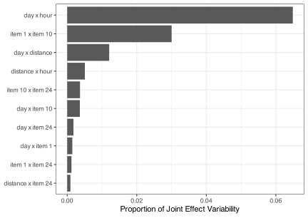
Note that the overall importance of the features are being quantified. From this analysis alone, we are not informed that the relationships between the hour and distance predictors and the outcome are nonlinear. It also doesn’t give any sense of the direction of the interaction (e.g., synergistic or antagonistic). We suggest using this tool early in the exploratory data analysis process to help focus visualizations on specific variables to understand how they relate to the outcome and other predictors.
There is a version of the statistic that can compute how much a specific predictor is interacting with any other predictor. It is also possible to compute a statistical test to understand if the H statistic is different than zero. In our opinion, it is more helpful to use these values as diagnostics rather than the significant/insignificant thinking that often accompanies formal statistical hypothesis testing results.
Inglis, Parnell, and Hurley (2022) discuss weak spots in the usage of the H-statistic, notably that correlated predictors can cause abnormally large values. This is an issue inherited from the use of partial dependence profiles (Apley and Zhu 2020).
Alternatively, Greenwell, Boehmke, and McCarthy (2018) measures the potential for variables to interact by assessing the “flatness” over regions of the partial dependence profile. The importance of a predictor, or a pair of predictors, is determined by computing the standard deviation of the flatness scores over regions. For example, Figure fig-delivery-items shows a flat profile for the item 1 \(\times\) item 9 interaction while the item 1 \(\times\) item 10 interaction has different ranges of means across values of item 1. Figure fig-flat-interaction shows ten interactions with the largest flatness importance statistics. As with the \(H^2\) results, the hour-by-day interaction. The two top ten lists have 6 other interactions in common.
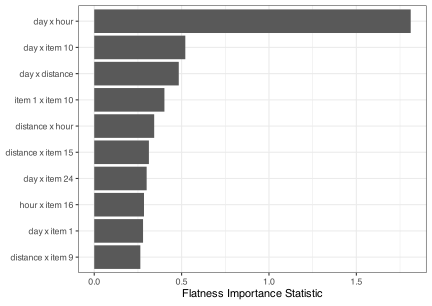
Other alternatives can be found in Hooker (2004), Herbinger, Bischl, and Casalicchio (2022), and Oh (2022).
The two PDP approaches we have described apply to any model capable of estimating interactions. There are also model-specific procedures for describing which joint effects are driving the model (if any). One method useful for tree-based models is understanding if two predictors are used in consecutive splits in the data. For example, Figure fig-reg-tree showed a shallow regression tree for the delivery time data. The terminal nodes had splits with orderings \(\text{hour}\rightarrow\text{hour}\) and \(\text{hour}\rightarrow\text{day} \rightarrow\text{distance}\) (twice). This implies that these three predictors have a higher potential to be involved in interactions with one another.
Kapelner and Bleich (2013) describe an algorithm that counts how many times pairs of variables are used in consecutive splits in a tree. They demonstrate this process with Bayesian Adaptive Regression Trees (BART, sec-bart-cls) which creates an ensemble of fairly shallow trees. Figure fig-bart-interaction shows the top ten pairwise interactions produced using this technique. Note that the BART implementation split categorical predictors via single categories. For the delivery data, this means that the tree would split on a specific day of the week (.i.e., Friday or not) instead of splitting all of the categories at once. This makes a comparison between the other two methods difficult. However, it can be seen that the hour \(\times\) day interaction has shown to be very important in all three methods.
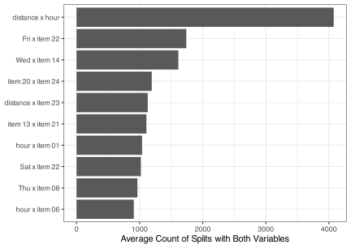
Caution should be exercised with this method. First, some tree ensembles randomly sample a subset of predictors for each split (commonly known as \(m_{try}\)). For example, if \(m_{try} = 4\), a random set of four predictors are the only ones considered for that split point. This deliberately coerces non-informative splits; we are not using the best possible predictors in a split. This can dilute the effectiveness of counting predictors in successive splits. Second, as discussed in sec-cls-trees, many tree-based splitting procedures disadvantage predictors with fewer unique values. For example, in the delivery data, the distance and hour predictors are more likely to be chosen for splitting than the item predictors even if they are equally informative. There are splitting procedures that correct for this bias, but users should be aware of the potential impartiality.
The H-statistic and its alternatives can be an incredibly valuable tool for learning about the data early on as well as suggesting new features that should be included in the model. They are, however, computationally expensive.
8.2 Polynomial Basis Expansions
In the food delivery data, we have thoroughly demonstrated that there are quantitative predictors that have nonlinear relationships with the outcome. In sec-model-development-whole-game, two of the three models for these data could naturally estimate nonlinear trends. Linear regression, however, could not. To fix this, the hour predictor spawned multiple features called spline terms and adding these to the model enables it to fit nonlinear patterns. This approach is called a basis expansion. In this section, we’ll consider (global) polynomial basis expansions.
The most traditional basis function is the polynomial expansion. If we start with a simple linear regression model with a single predictor:
\[ y_i = \beta_0 + \beta_1 x_{i} + \epsilon_i \]
the expansion would add additional terms with values of the predictor exponentiated to the \(p^{th}\) power5. For a cubic polynomial model:
\[ y_i = \beta_0 + \beta_1 x_{i} + \beta_2 x_{i}^2 + \beta_3 x_{i}^3 + \epsilon_i \tag{8.3}\]
This is a linear model in the sense that it is linear in the statistical parameters (the \(\beta\) values), so we can use standard parameter estimation procedures (e.g., least squares).
Figure fig-global-polynomial shows data from Bralower et al. (1997) which was collected to understand the relationship between the age of a fossil and the ratio of two radioactive isotopes. The data set contains 106 data points for these two variables. The relationship is highly nonlinear, with several regions where the data have significant convex or concave patterns.
For simplicity, a fit from a cubic model Equation eq-poly-linear-reg is shown as the default. While the pattern is nonlinear, the line does not conform well to the data. The lines above the plot show the three basis functions that, for \(p=3\), correspond to linear (\(x\)), quadratic (\(x^2\)), and cubic (\(x^3\)) terms. The effects of these terms are blended using their estimated slopes (\(\hat{\beta}_j\)) to produce the fitted line. Notice that the cubic fit is very similar to the cubic basis shown at the top of the figure. The estimated coefficient for the cubic term is much larger than the linear or quadratic coefficients
#| label: shiny-global-polynomial
#| viewerHeight: 600
#| viewerWidth: "100%"
#| standalone: true
library(shiny)
library(patchwork)
library(dplyr)
library(tidyr)
library(ggplot2)
library(splines2)
library(bslib)
library(viridis)
library(aspline)
source("https://raw.githubusercontent.com/aml4td/website/main/R/shiny-setup.R")
# source("https://raw.githubusercontent.com/aml4td/website/main/R/shiny-polynomial.R")
# Requires the sources in shiny-setup.R
data(fossil)
ui <- page_fillable(
# theme = grid_theme,
padding = "1rem",
layout_columns(
fill = FALSE,
col_widths = breakpoints(sm = c(-3, 6, -3)),
sliderInput(
"global_deg",
label = "Polynomial Degree",
min = 1L,
max = 20L,
step = 1L,
value = 3L,
ticks = TRUE
) # sliderInput
), # layout_columns
layout_columns(
fill = FALSE,
col_widths = breakpoints(sm = c(-1, 10, -1)),
as_fill_carrier(plotOutput('global'))
)
)
server <- function(input, output, session) {
maybe_lm <- function(x) {
try(lm(y ~ poly(x, input$piecewise_deg), data = x), silent = TRUE)
}
names_zero_padded <- function(num, prefix = "x", call = rlang::caller_env()) {
rlang:::check_number_whole(num, min = 1, call = call)
ind <- format(seq_len(num))
ind <- gsub(" ", "0", ind)
paste0(prefix, ind)
}
expansion_to_tibble <- function(x, original, prefix = "term ") {
cls <- class(x)[1]
nms <- names_zero_padded(ncol(x), prefix)
colnames(x) <- nms
x <- as_tibble(x)
x$variable <- original
res <- tidyr::pivot_longer(x, cols = c(-variable))
if (cls != "poly") {
res <- res[res$value > .Machine$double.eps, ]
}
res
}
mult_poly <- function(dat, degree = 4) {
rng <- extendrange(dat$x, f = .025)
grid <- seq(rng[1], rng[2], length.out = 1000)
grid_df <- tibble(x = grid)
feat <- poly(grid_df$x, degree)
res <- expansion_to_tibble(feat, grid_df$x)
# make some random names so that we can plot the features with distinct colors
rand_names <- lapply(
1:degree,
function(x) paste0(sample(letters)[1:10], collapse = "")
)
rand_names <- unlist(rand_names)
rand_names <- tibble(name = unique(res$name), name2 = rand_names)
res <- dplyr::inner_join(res, rand_names, by = dplyr::join_by(name)) %>%
dplyr::select(-name) %>%
dplyr::rename(name = name2)
res
}
col_rect <- ggplot2::element_rect(fill = "#fcfefe", colour = "#fcfefe")
theme_light_bl <- function() {
ggplot2::theme(
panel.background = col_rect,
panel.border = col_rect,
legend.background = col_rect,
legend.key = col_rect,
plot.background = col_rect
)
}
# ------------------------------------------------------------------------------
spline_example <- tibble(x = fossil$age, y = fossil$strontium.ratio)
rng <- extendrange(fossil$age, f = .025)
grid <- seq(rng[1], rng[2], length.out = 1000)
grid_df <- tibble(x = grid)
alphas <- 1 / 4
line_wd <- 1.0
base_p <- spline_example %>%
ggplot(aes(x = x, y = y)) +
geom_point(alpha = 3 / 4, pch = 1, cex = 3) +
labs(x = "Age", y = "Isotope Ratio") +
lims(x = rng) +
theme_bw()
output$global <- renderPlot({
poly_fit <- lm(y ~ poly(x, input$global_deg), data = spline_example)
poly_pred <- predict(
poly_fit,
grid_df,
interval = "confidence",
level = .90
) %>%
bind_cols(grid_df)
global_p <- base_p
if (input$global_deg > 0) {
global_p <- global_p +
geom_ribbon(
data = poly_pred,
aes(y = NULL, ymin = lwr, ymax = upr),
alpha = 1 / 15
) +
geom_line(
data = poly_pred,
aes(y = fit),
col = "black",
linewidth = line_wd
) +
theme(
plot.margin = margin(t = -20, r = 0, b = 0, l = 0),
panel.background = col_rect,
plot.background = col_rect,
legend.background = col_rect,
legend.key = col_rect
)
feature_p <- poly(grid_df$x, input$global_deg) %>%
expansion_to_tibble(grid_df$x) %>%
ggplot(aes(variable, y = value, group = name, col = name)) +
geom_line(show.legend = FALSE) + # , linewidth = 1, alpha = 1 / 2
theme_void() +
theme(
plot.margin = margin(t = 0, r = 0, b = -20, l = 0),
panel.background = col_rect,
plot.background = col_rect,
legend.background = col_rect,
legend.key = col_rect
) +
scale_color_viridis(discrete = TRUE, option = "turbo")
p <- (feature_p / global_p) + plot_layout(heights = c(1.5, 4))
}
print(p)
})
}
app <- shinyApp(ui, server)
appWe might improve the fit by increasing the model complexity, i.e., adding additional polynomial terms. An eight-degree polynomial seems to fit better, especially in the middle of the data where the pattern is most dynamic. However, there are two issues.
First, we can see from the 90% confidence bands around the line that the variance can be very large, especially at the ends. The fitted line and confidence bands go slightly beyond the range of the data (i.e., extrapolation). Polynomial functions become erratic when they are not close to observed data points. This becomes increasingly pathological as the polynomial degree increases. For example, in Figure fig-global-polynomial, choosing degrees greater than 14 will show extreme uncertainty in the variance of the mean fit (the solid line). This is a good example of the variance-bias tradeoff discussed in sec-variance-bias below.
Decreasing the polynomial degree will result in less complex patterns that tend to underfit the data. Increasing the degree will result in the fitted line being closer to the data, but, as evidenced by the confidence interval in the shaded region, the uncertainty in the model explodes (especially near or outside of the range range). This is due to severe overfitting. Eventually, you can increase the degree until the curve passes through every data point. However, the fit for any other values will be wildly inaccurate and unstable.
Second, the trend is concave for age values greater than 121 when it probably should be flat. The issue here is that a global polynomial pattern is stipulated. The effect of each model term is the same across the entire data range6. We increased the polynomial degree to eight to improve the fit via additional nonlinearity. Unfortunately, this means that some parts of the data range will be too nonlinear than required, resulting in poor fit.
A global polynomial is often insufficient because the nonlinear relationships are different in different data sections. There may be steep increases in one area and gradual increases in others. Rather than using a global polynomial, what if we used different basis expansions in regions with more consistent trends rather than a global polynomial?
Figure fig-piecewise-polynomials shows a crude approach where three different regions have different polynomial fits with the same degree. The pre-set degree and data ranges are probably as good as can be (after much manual fiddling) but the approach isn’t terribly effective. The curves do not connect. This discontinuity is visually discordant and most likely inconsistent with the true, underlying pattern we are attempting to estimate. Also, there are large jumps in uncertainty when predicting values at the extremes of each region’s range.
#| label: shiny-piecewise-polynomials
#| viewerHeight: 600
#| viewerWidth: "100%"
#| standalone: true
library(shiny)
library(patchwork)
library(dplyr)
library(tidyr)
library(ggplot2)
library(splines2)
library(bslib)
library(viridis)
library(aspline)
source("https://raw.githubusercontent.com/aml4td/website/main/R/shiny-setup.R")
source("https://raw.githubusercontent.com/aml4td/website/main/R/shiny-piecewise.R")
appIt turns out that we can make sure that the different fitted curves can connect at the ends and that they do that smoothly. This is done via a technique called splines which yield better results and are more mathematically elegant.
8.3 Spline Functions
Let’s assume we use piecewise cubic polynomials in the regional curve fits. To make the curves connect, we can add additional features that isolate local areas of \(x\) via a new feature column such as \(h(x - \xi)^3\) where
\[ h(u) = \begin{cases} x & \text{if $u > 0$,} \\ 0 & \text{if $u \le 0$.} \end{cases} \]
and \(\xi\) defines one of the boundary points.
This zeros out parts of the predictor’s range that are greater than \(\xi\). A smooth, continuous model would include a global polynomial expansion (i.e., \(x\), \(x^2\), and \(x^3\)) and these partial features for each value that defines the regions (these breakpoints, denoted with \(\xi\), are called knots7). For example, if a model has three regions, the basis expansion has 3 + 2 = 5 feature columns. For the fossil data, a three region model with knots at \(\xi_1 = 107\) and \(\xi_2 = 114\) would have model terms
\[ y_i = \beta_0 + \beta_1x_i + \beta_2x^2 + \beta_3x^3 + \beta_4h(x_i - 107)^3 + \beta_5h(x_i - 114)^3 + \epsilon_i \tag{8.4}\]
The model fit, with the default interior knots, shown in Figure fig-simple-spline looks acceptable. As with global polynomials, there is a significant increase in the confidence interval width as the model begins to extrapolate slightly beyond the data used to fit the model.
#| label: shiny-simple-spline
#| viewerHeight: 600
#| viewerWidth: "100%"
#| standalone: true
library(shiny)
library(patchwork)
library(dplyr)
library(tidyr)
library(ggplot2)
library(bslib)
library(aspline)
source("https://raw.githubusercontent.com/aml4td/website/main/R/shiny-setup.R")
source("https://raw.githubusercontent.com/aml4td/website/main/R/shiny-spline-manual-knots.R")
appLet’s consider how each model parameter affects the predictor’s space by labeling the regions A, B, and C (from left to right). For region A, the model is a standard cubic function (using \(\beta_0\) though \(\beta_3\)). Region B adds the effect of the first partial function by including \(\beta_4\). Finally, region C is a function of all five model parameters. This representation of a spline is called a truncated power series and is mostly used to demonstrate how spline functions can flexibly model local trends.
The word “spline” is used in many different contexts. It’s confusing, but we’ll try to clear it up.
We’ll define a “spline” or “spline function” as a collection of features that represent continuous and smooth piece-wise polynomial features of a single-number predictor (with some specific properties).
“Regression splines” usually describe the use of splines of one or more predictors in a model fit such as ordinary least squares (Wood 2006; Arnold, Kane, and Lewis 2019).
The term “smoothing splines” refers to a procedure that encapsulates both a spline function as well as an estimation method to fit it to the data (usually via regularization). There is typically a knot for each unique data point in \(x\) (Wang 2011).
Also, there are many types of spline functions; we’ll focus on one but describe a few others at the end of this section.
A different method for representing spline basis expansions is the B-spline (De Boor 2003). The terms in the model are parameterized in a completely different manner. Instead of the regions using increasingly more model parameters to define the regional fit, B-spline terms have more localized features such that only a few are “active” (i.e., non-zero) at a particular point \(x_0\). This can be seen in Figure fig-bases which contains the basis function values for the truncated power series and B-spines
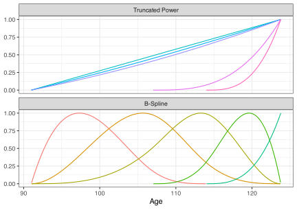
B-spline parameterizations are used primarily for their numerical properties and, for this reason, we’ll use them to visualize different types of splines.
Before considering another type of spline function, let’s look at one practical aspect of splines: choosing the knots.
8.3.1 Defining the Knots
How do we choose the knots? We can select them manually, and some authors advocate for this point of view. As stated by Breiman (1988):
My impression, after much experimentation, is the same - that few knots suffice providing that they are in the right place.
A good example is seen in Figure fig-simple-spline with the fossil data. Using the knot positioning widget at the top, we can find good and bad choices for \(\xi_1\) and \(\xi_2\); knot placement can matter. However, hand-curating each feature becomes practically infeasible as the number of knots/features increases. Otherwise, they can be set algorithmically.
There are two main choices for automatic knot selection. The first uses a sequence of equally-spaced values encompassing the predictor space. The second is to estimate percentiles of the predictor data so that regions have about the same number of values they capture. For example, a fourth degree of freedom spline would have three split points within the data arranged at the 25th, 50th, and 75th percentiles (with the minimum and maximum values bracketing the outer regions).
It would be unwise to place knots as evenly spaced values between the minimum and maximum values. Without taking the distribution of the predictor into account, it is possible that the region between some knots might not contain any training data. Since there are usually several overlapping spline features for a given predictor value, we can still estimate the model despite empty regions (but it should be avoided).
Many, but not all, splines specify how complex the fit should be in the area between the knots. However, cubic splines are a common choice because they allow for greater flexibility than linear or quadratic fits, but are not overly flexible, which could lead to over-fitting. Increasing the polynomial degree beyond three has more disadvantages than advantages. Recall that, in Figure fig-global-polynomial, variance exploded at the ends of the predictor distribution when the polynomial degree was very large.
8.3.2 Natural Cubic Splines
The type of spline that we suggest using by default is the natural cubic spline8 (Stone and Koo 1985; Arnold, Kane, and Lewis 2019; Gauthier, Wu, and Gooley 2020). It uses cubic fits in the interior regions and linear fits in regions on either end of the predictor distribution. For a simple two-knot model similar to Equation eq-simple-spline, there are only three slope parameters (the global quadratic and cubic terms are not used):
\[ y_i = \beta_0 + \beta_1x_i + \beta_2h(x_i - \xi_1)^3 + \beta_3h(x_i - \xi_2)^3 + \epsilon_i \tag{8.5}\]
For the fossil data, Figure fig-natural-cubic-spline shows how this model performs with different numbers of knots chosen using quantiles. The 90% confidence bands show an increase in uncertainty when extrapolating, but the increase is orders of magnitude smaller than a global polynomial with the same number of model terms.
#| label: shiny-natural-cubic-spline
#| viewerHeight: 600
#| viewerWidth: "100%"
#| standalone: true
library(shiny)
library(patchwork)
library(dplyr)
library(tidyr)
library(ggplot2)
library(splines2)
library(bslib)
library(viridis)
library(aspline)
source("https://raw.githubusercontent.com/aml4td/website/main/R/shiny-setup.R")
source("https://raw.githubusercontent.com/aml4td/website/main/R/shiny-spline-natural.R")
appGiven the simplicity of this spline function, the fixed polynomial degree, and its stability in the tails of the predictor’s distribution, we suggest choosing natural cubic splines for most problems.
Splines can be configured in different ways. Two details to specify are how many regions should be separately modeled and how they are apportioned. The number of regions is related to how many features are used in the basis expansion. As the number of regions increases, so does the ability of the spline to adapt to whatever trend might be in the data. However, the risk of overfitting the model to individual data points increases as the flexibility increases.
For this reason, we often tune the amount of complexity that the spline will accommodate. Generally, since the number of regions is related to the number of features, we’ll refer to the complexity of the basis function via the number of degrees of freedom afforded by the spline. We don’t necessarily know how many degrees of freedom to use. There are two ways to determine this. First, we can treat the complexity of the spline as a tuning parameter and optimize it with the tuning methods mentioned in Chapters sec-grid-search and sec-iterative-search. Another option is to over-specify the number of degrees of freedom and let specialized training methods solve the potential issue of over-fitting. From Wood (2006):
An alternative to controlling smoothness by altering the basis dimension, is to keep the basis dimension fixed, at a size a little larger than it is believed it could reasonably be necessary, but to control the model’s smoothness by adding a “wiggliness” penalty to the least squares fitting objective.
This approach is advantageous when there are separate basis expansions for multiple predictors. The overall smoothness can be estimated along with the parameter estimates in the model. The process could be used with general linear models (Chapters sec-ols and sec-ordinary-logistic-regression) or other parametric linear models.
Splines are extremely useful and are especially handy when we want to encourage a simple model (such as linear regression) to approximate the predictive performance of a much more complex black-box model (e.g., a neural network or tree ensemble). We’ll also see splines and spline-like features used within different modeling techniques, such as generalized additive models (Sections sec-reg-gam and sec-cls-gam), multivariate adaptive regression splines (sec-mars), and a few others.
8.4 Sidebar: The Variance-Bias Tradeoff
Our discussion of basis expansions presents an excellent time for a segue to discuss an essential idea in statistics and modeling: the variance-bias tradeoff. This idea will be relevant in upcoming sections for resampling and specific models. At the end of this section, we’ll also connect it to sec-effect-encodings.
What does variance mean in terms of a machine learning model? In this context, it would quantify how much the fitted model changes if we slightly change the data. For example, would the curve change much if we repeat the data collection that produces the values in sec-polynomials and fit the sample model (for a fixed sample size and polynomial degree)? We can also look at the variance of prediction: for a specific new data point \(x_0\), how much intrinsic uncertainty is there? Similar to the discussion regarding extrapolation of global polynomials, we might want to compare how much the uncertainty changes as we move outside the training set’s range.
Bias is the difference between some estimate, like an average or a model prediction, and its true value. The true value is not the same as the data we collect; it is the unknowable theoretical value. For this reason, bias is often difficult to compute directly. For machine learning, the most pertinent idea of bias relates to how well a model can conform to the patterns we see in the data (hoping that the observed data are a good representation of the true values). Back in Figure fig-global-polynomial, we saw that a linear model didn’t fit the data well. This is due to simple linear regression being a high-bias model because, without additional feature engineering, it cannot replicate nonlinear trends. Adding polynomial or spline terms decreased the model’s bias since it was more flexible.
We can think of bias in terms of the question: “How close are we aiming to the center of the target?” and variance as: “How much do our results vary when shooting at the target?”
The concepts of variance and bias are paired because they are often at odds with one another. For models that predict, we’d like a low variance, low bias model. In many cases, that can be exceedingly difficult to achieve. We can often lower bias by adding model complexity. However, increased complexity usually comes at the expense of stability (i.e., high variance). We will often be in the position of trying to find an acceptable compromise between the two. This was discussed with global polynomials; linear models were bad for our data, but adding too many polynomial terms adds unnecessary complexity and an explosion of variance (reflected in the confidence bands).
This leads us to the mean squared error (MSE). We’ve seen the root mean squared error already where we used it as a measure of accuracy for regression models. More generally, we can write it in terms of some unknown parameter \(\theta\) and some estimate \(\hat{\theta}\) based on statistical estimation from data: \[MSE = E\left[(\theta - \hat{\theta})^2\right]\]
It turns out that the MSE is a combination of model variance and (squared) bias (\(\theta - \hat{\theta}\)):
\[MSE = E\left[(\theta - \hat{\theta})^2\right] = Var[\hat{\theta}] + (\theta - \hat{\theta})^2 + \sigma^2\]
where \(\sigma^2\) represents some unknown amount of “irreducible noise.” Because of this, MSE offers a statistic to minimize that accounts for both properties. This can offer a compromise between the two.
To illustrate this, we simulated a simple nonlinear model:
\[y_i = x_i^3 + 2\exp\left[-6(x_i - 0.3)^2\right] + \epsilon_i\]
where the error terms are \(\epsilon_i \sim N(0, 0.1)\) and the predictor values were uniformly spaced across [-1.2, 1.2]. Since we know the true values, we can compute the model bias.
To create a simulated data set, 31 samples were generated. Of these, 30 were used for the training set and one was reserved for the estimating the variance and bias. The training set values were roughly equally spaced across the range of the predictor. One simulated data set is shown in Figure fig-nonlinear-sim, along with the true underlying pattern.
#> Warning: executing %dopar% sequentially: no parallel backend registeredA linear model was estimated using ordinary least squares and a polynomial expansion for each simulated data set. The test set values were predicted, and the bias, variance, and root mean squared error statistics were computed. This was repeated 1,000 times for polynomial degrees ranging from one to twenty.
Figure fig-sim-results shows the average statistic values across model complexity (i.e., polynomial degree). A linear model performs poorly for the bias due to underfitting (as expected). In panel (a), adding more nonlinearity results in a substantial decrease in bias because the model fit is closer to the true equation. This improvement plateaus at a sixth-degree polynomial and stays low (nearly zero). The variance begins low; even though the linear model is ineffective, it is stable. Once additional terms are added, the variance of the model steadily increases then explodes around a 20th degree polynomial9. This shows the tradeoff; as the model becomes more complex, it fits the data better but eventually becomes unstable.
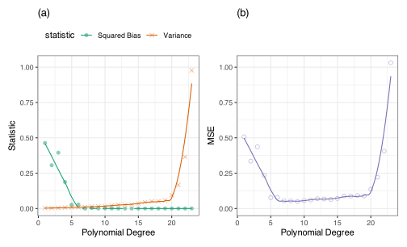
The mean squared error in panel (b) shows the combined effect of variance and bias. It shows a steep decline as we add more terms, then plateaus between seven and fifteenth-degree models. After that, the rapidly escalating variance dominates the MSE as it rapidly increases.
The variance-bias tradeoff is the idea that we can exploit one for the other. Let’s go back to the basic sample mean statistic. If the data being averaged are normally distributed, the simple average is an unbiased estimator: it is always “aiming” for the true theoretical value. That’s a great property to have. The issue is that many unbiased estimators can have very high variance. In some cases, a slight increase in bias might result in a drastic decrease in variability. The variance-bias tradeoff helps us when one of those two quantities is more important.
Figure fig-tradeoff shows a simple example. Suppose we have some alternative method for estimating the mean of a group that adds some bias while reducing variance. That tradeoff might be worthwhile if some bias will greatly reduce the variance. In our figure, suppose the true population mean is zero. The green curve represents the sample mean for a fixed sample size. It is centered at zero but has significant uncertainty. The other curve might be an alternative estimator that produces a slightly pessimistic estimate (its mean is slightly smaller than zero) but has 3-fold smaller variation. When estimating the location of the mean of the population, the biased estimate will have a smaller confidence interval for a given sample size than the unbiased estimate. While the biased estimate may slightly miss the target, the window of the location will be much smaller than the unbiased estimate. This may be a good idea depending on how the estimate will be used 10.
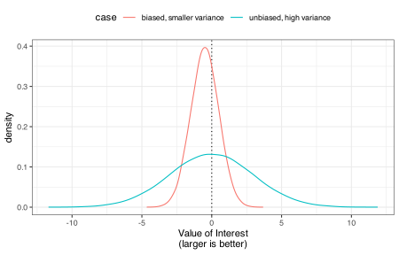
The categorical encoding approach shown in Equation eq-effect-posterior from sec-effect-encodings is another example. Recall that \(\bar{y}_j\) was the average daily rate for agent \(j\). That is an unbiased estimator but has high variance, especially for agents with few bookings. The more complex estimator \(\hat{y}_j\) in Equation eq-effect-posterior is better because it is more reliable. That reliability is bought by biasing the estimator towards the overall mean (\(\mu_0\)).
As mentioned, we’ll return to this topic several times in upcoming sections.
8.5 Discretization
Discretization11 is the process of converting quantitative data into a set of qualitative groups (a.k.a “bins”). The model uses these values instead of the original predictor column (perhaps requiring an additional step to convert them into binary indicator columns). Sadly, Figure fig-wall-of-pie illustrates numerous analyses that we have witnessed. This example uses the food delivery data and breaks the order hour and distance predictors into six and three groups, respectively. It also converts the delivery time outcome into three groups. This visualization, colloquially known as the “Wall of Pie,” tries to explain how the two predictors affect the outcome categories, often with substantial subjectivity.
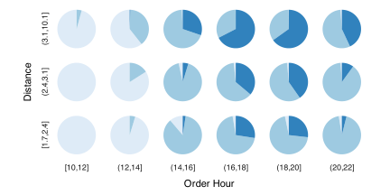
Our general advice, described in more detail in Kuhn and Johnson (2019), is that the first inclination should never be to engineer continuous predictors via discretization12. Other tools, such as splines, are both theoretically and practically superior to converting quantitative data to qualitative data. In addition, if a predictor can be split into regions that are predictive of the response, then methods that use recursive partitioning will be less arbitrary and more effective.
The literature supporting this is extensive, such as: Cohen (1983), Altman (1991), Maxwell and Delaney (1993), Altman et al. (1994), Buettner, Garbe, and Guggenmoos-Holzmann (1997), Altman (1998), Taylor and Yu (2002), MacCallum et al. (2002), Irwin and McClelland (2003), Owen and Froman (2005), Altman and Royston (2006), Royston, Altman, and Sauerbrei (2006), van Walraven and Hart (2008), Fedorov, Mannino, and Zhang (2009), Naggara et al. (2011), Bennette and Vickers (2012), Kuss (2013), Kenny and Montanari (2013), Barnwell-Menard, Li, and Cohen (2015), Fernandes et al. (2019), as well as the references shown in Harrell (2015). These articles identify the main problems of discretization as follows:
- Arbitrary (non-methodological) choice of breaks for binning can lead to significant bias.
- The predictor suffers a significant loss of information, making it less effective. Moreover, there is reduced statistical power to detect differences between groups when they exist.
- The number of features are increased, thus exacerbating the challenge of feature selection.
- Correlations between predictors are inflated due to the unrealistic reduction in the variance of predictors.
Pettersson et al. (2016) shows differences in analyses with and without discretization. Their Fig. 1 shows a common binning analysis: a continuous outcome and one or more predictors are converted to qualitative formats and a grid of pie charts is created. Inferences are made from this visualization. One main problem is related to uncertainty. The noise in the continuous data is squashed so that any visual signal that is seen appears more factual than it is in reality13. Also, the pie charts do not show measures of uncertainty; how do we know when two pie charts are “significantly different”?
Alternatively, Figs. 4 and 5 of their paper shows the results of a logistic regression model where all predictors were left as-is and splines were used to model the probability of the outcome. This has a much simpler interpretation and confidence bands give the reader a sense that the differences are real.
While it is not advisable to discretize most predictors, there are some cases when discretization can be helpful. As a counter-example, one type of measurement that is often appropriate to discretize is date. For example, Kuhn and Johnson (2019) show a data set where daily ridership data was collected for the Chicago elevated train system. The primary trend in the data was whether or not the day was a weekday. Ridership was significantly higher when people commute to work. A simple indicator for Saturday/Sunday (as well as major holiday indicators) was the driving force behind many regression models on those data. In this case, making qualitative versions of the date was rational, non-arbitrary, and driven by data analysis.
Note that several models, such as classification/regression trees and multivariate adaptive regression splines, estimate cut points in the model-building process. The difference between these methodologies and manual binning is that the models use all the predictors to derive bins based on a single objective (such as maximizing accuracy). They evaluate many variables simultaneously and are usually based on statistically sound methodologies.
If it is the last resort, how should one go about discretizing predictors? First, topic specific expertise of the problem can be used to create appropriate categories when categories are truly merited as in the example of creating an indicator for weekend day in the Chicago ridership data. Second, and most important, any methodology should be well validated using data that were not used to build the model (or choose the cut points for binning). To convert data to a qualitative format, there are both supervised and unsupervised methods.
The most reliable unsupervised approach is to choose the number of new features and use an appropriate number of percentiles to bin the data. For example, if four new features are required, the 0, 25%, 50%, 75%, and 100% quantiles would be used. This ensures that each resulting bin contains about the same number of samples from the training set.
If you noticed that this is basically the same approach suggested for choosing spline knots in the discussion earlier in this chapter, you are correct. This process is very similar to using a zero-order polynomial spline, the minor difference being the placement of the knots. A zero-order model is a simple constant value, usually estimated by the mean. This is theoretically interesting but also enables users to contrast discretization directly with traditional spline basis expansions. For example, if a B-spline was used, the modeler could tune over the number of model terms (i.e., the number of knots) and the spline polynomial degree. If binning is the superior approach, the tuning process would select that approach as optimal. In other words, we can let the data decide if discretization is a good idea14.
A supervised approach would, given a specific number of new features to create, determine the breakpoints by optimizing a performance measure (e.g., RMSE, classification accuracy, etc.). A good example is a tree-based model (very similar to the process shown in Figure fig-collapse). After fitting a single tree or, better yet, an ensemble of trees, the split values in the trees can be used as the breakpoints.
Let’s again use the fossil data from Bralower et al. (1997) illustrated in previous section on basis functions. We can fit a linear regression with qualitative terms for the age derived using:
- An unsupervised approach using percentiles at cut-points.
- A supervised approach where a regression tree model is used to set the breakpoints for the bins.
In each case, the number of new features requires tuning. Using the basic grid search tools described in sec-grid, the number of required terms was set for each method (ranging from 2 to 10 terms) by minimizing the RMSE from a simple linear regression model. The results are that both approaches required the same number of new features and produced about the same level of performance; the unsupervised approach required 6 breaks to achieve an RMSE of 0.0000355 and the supervised model has an RMSE of 0.0000302 with 6 cut points. Figure fig-fossil-bins shows the fitted model using the unsupervised terms.
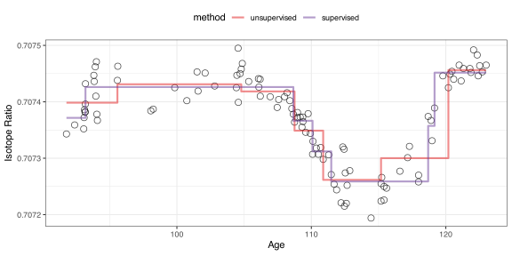
The results are remarkably similar to one another. The blocky nature of the fitted trend reflects that, within each bin, a simple mean is used to estimate the sale price.
Again, we want to emphasize that arbitrary or subjective discretization is almost always suboptimal.
Chapter References
Altman, D G. 1991. “Categorising Continuous Variables.” British Journal of Cancer 64 (5): 975.
Altman, D G. 1998. “Suboptimal Analysis Using ’Optimal’ Cutpoints.” British Journal of Cancer 78 (4): 556–57.
Altman, D G, B Lausen, W Sauerbrei, and M Schumacher. 1994. “Dangers of Using "Optimal" Cutpoints in the Evaluation of Prognostic Factors.” Journal of the National Cancer Institute 86 (11): 829.
Altman, D G, and P Royston. 2006. “The Cost of Dichotomising Continuous Variables.” BMJ 332 (7549): 1080.
Altorki, Nasser K, Timothy E McGraw, Alain C Borczuk, Ashish Saxena, Jeffrey L Port, Brendon M Stiles, Benjamin E Lee, et al. 2021. “Neoadjuvant Durvalumab with or Without Stereotactic Body Radiotherapy in Patients with Early-Stage Non-Small-Cell Lung Cancer: A Single-Centre, Randomised Phase 2 Trial.” The Lancet Oncology 22 (6): 824–35.
Apley, D, and J Zhu. 2020. “Visualizing the Effects of Predictor Variables in Black Box Supervised Learning Models.” Journal of the Royal Statistical Society Series B: Statistical Methodology 82 (4): 1059–86.
Arnold, T, M Kane, and B Lewis. 2019. A Computational Approach to Statistical Learning. Chapman; Hall/CRC.
Barnwell-Menard, JL, Q Li, and A Cohen. 2015. “Effects of Categorization Method, Regression Type, and Variable Distribution on the Inflation of Type-I Error Rate When Categorizing a Confounding Variable.” Statistics in Medicine 34 (6): 936–49.
Bennette, C, and A Vickers. 2012. “Against Quantiles: Categorization of Continuous Variables in Epidemiologic Research, and Its Discontents.” BMC Medical Research Methodology 12: 21.
Bralower, T, P Fullagar, C Paull, G Dwyer, and R Leckie. 1997. “Mid-Cretaceous Strontium-Isotope Stratigraphy of Deep-Sea Sections.” Geological Society of America Bulletin 109 (11): 1421–42.
Breiman, L. 1988. “Monotone Regression Splines in Action (Comment).” Statistical Science 3 (4): 442–45.
Buettner, P, C Garbe, and I Guggenmoos-Holzmann. 1997. “Problems in Defining Cutoff Points of Continuous Prognostic Factors: Example of Tumor Thickness in Primary Cutaneous Melanoma.” Journal of Clinical Epidemiology 50 (11): 1201–10.
Chen, SH, J Sun, L Dimitrov, A Turner, T Adams, D Meyers, BL Chang, et al. 2008. “A Support Vector Machine Approach for Detecting Gene-Gene Interaction.” Genetic Epidemiology 32 (2): 152–67.
Chipman, H. 1996. “Bayesian Variable Selection with Related Predictors.” Canadian Journal of Statistics 24 (1): 17–36.
Cohen, J. 1983. “The Cost of Dichotomization.” Applied Psychological Measurement 7 (3): 249–53.
De Boor, C. 2003. A Practical Guide to Splines. Springer-Verlag.
Elith, J, J Leathwick, and T Hastie. 2008. “A Working Guide to Boosted Regression Trees.” Journal of Animal Ecology 77 (4): 802–13.
Fedorov, V, F Mannino, and R Zhang. 2009. “Consequences of Dichotomization.” Pharmaceutical Statistics 8 (1): 50–61.
Fernandes, A, C Malaquias, D Figueiredo, E da Rocha, and R Lins. 2019. “Why Quantitative Variables Should Not Be Recoded as Categorical.” Journal of Applied Mathematics and Physics 7 (7): 1519–30.
Friedman, J, and B Popescu. 2008. “Predictive Learning via Rule Ensembles.” The Annals of Applied Statistics 2 (3): 916–54.
García-Magariños, M, I López-de-Ullibarri, R Cao, and A Salas. 2009. “Evaluating the Ability of Tree-Based Methods and Logistic Regression for the Detection of SNP-SNP Interaction.” Annals of Human Genetics 73 (3): 360–69.
Gauthier, J, QV Wu, and TA Gooley. 2020. “Cubic Splines to Model Relationships Between Continuous Variables and Outcomes: A Guide for Clinicians.” Bone Marrow Transplantation 55 (4): 675–80.
Greenwell, B, B Boehmke, and A J McCarthy. 2018. “A Simple and Effective Model-Based Variable Importance Measure.” arXiv.
Hamada, M, and CF Wu. 1992. “Analysis of Designed Experiments with Complex Aliasing.” Journal of Quality Technology 24 (3): 130–37.
Harrel, F, K Lee, and B Pollock. 1988. “Regression Models in Clinical Studies: Determining Relationships Between Predictors and Response.” JNCI: Journal of the National Cancer Institute 80 (15): 1198–1202.
Harrell, F. 2015. Regression Modeling Strategies. Springer.
Herbinger, J, B Bischl, and G Casalicchio. 2022. “REPID: Regional Effect Plots with Implicit Interaction Detection.” In International Conference on Artificial Intelligence and Statistics, 10209–33.
Hooker, G. 2004. “Discovering Additive Structure in Black Box Functions.” In Proceedings of the Tenth ACM SIGKDD International Conference on Knowledge Discovery and Data Mining, 575–80.
Inglis, A, A Parnell, and C Hurley. 2022. “Visualizing Variable Importance and Variable Interaction Effects in Machine Learning Models.” Journal of Computational and Graphical Statistics 31 (3): 766–78.
Irwin, J R, and G H McClelland. 2003. “Negative Consequences of Dichotomizing Continuous Predictor Variables.” Journal of Marketing Research 40 (3): 366–71.
Kapelner, A, and J Bleich. 2013. “bartMachine: Machine Learning with Bayesian Additive Regression Trees.” arXiv.
Kenny, P W, and C A Montanari. 2013. “Inflation of Correlation in the Pursuit of Drug-Likeness.” Journal of Computer-Aided Molecular Design 27 (1): 1–13.
Kuhn, M, and K Johnson. 2019. Feature Engineering and Selection: A Practical Approach for Predictive Models. CRC Press.
Kuss, O. 2013. “The Danger of Dichotomizing Continuous Variables: A Visualization.” Teaching Statistics 35 (2): 78–79.
Lampa, E, L Lind, P Lind, and A Bornefalk-Hermansson. 2014. “The Identification of Complex Interactions in Epidemiology and Toxicology: A Simulation Study of Boosted Regression Trees.” Environmental Health 13 (1): 57.
Lim, M, and T Hastie. 2015. “Learning Interactions via Hierarchical Group-Lasso Regularization.” Journal of Computational and Graphical Statistics 24 (3): 627–54.
MacCallum, R C, S Zhang, K J Preacher, and D Rucker. 2002. “On the Practice of Dichotomization of Quantitative Variables.” Psychological Methods 7 (1): 19–40.
Maxwell, S, and H Delaney. 1993. “Bivariate Median Splits and Spurious Statistical Significance.” Psychological Bulletin 113 (1): 181–90.
Miller, A. 1984. “Selection of Subsets of Regression Variables.” Journal of the Royal Statistical Society. Series A (General), 389–425.
Mokhtari, Reza Bayat, Tina S Homayouni, Narges Baluch, Evgeniya Morgatskaya, Sushil Kumar, Bikul Das, and Herman Yeger. 2017. “Combination Therapy in Combating Cancer.” Oncotarget 8 (23): 38022–43.
Molnar, C. 2020. Interpretable Machine Learning: A Guide for Making Black Box Models Explainable. Lulu.com.
Naggara, O, J Raymond, F Guilbert, D Roy, A Weill, and D G Altman. 2011. “Analysis by Categorizing or Dichotomizing Continuous Variables Is Inadvisable: An Example from the Natural History of Unruptured Aneurysms.” AJNR. American Journal of Neuroradiology 32 (3): 437–40.
Oh, S. 2022. “Predictive Case-Based Feature Importance and Interaction.” Information Sciences 593: 155–76.
Owen, S, and R Froman. 2005. “Why Carve up Your Continuous Data?” Research in Nursing and Health 28 (6): 496–503.
Pettersson, M, XiXnjun Hou, M Kuhn, T T Wager, G W Kauffman, and P R Verhoest. 2016. “Quantitative Assessment of the Impact of Fluorine Substitution on P-Glycoprotein (P-gp) Mediated Efflux, Permeability, Lipophilicity, and Metabolic Stability.” Journal of Medicinal Chemistry 59 (11): 5284–96.
Planchard, D, P Jänne, Y Cheng, J Yang, N Yanagitani, SW Kim, S Sugawara, et al. 2023. “Osimertinib with or Without Chemotherapy in EGFR-Mutated Advanced NSCLC.” New England Journal of Medicine 389 (21): 1935–48.
Royston, P, D G Altman, and W Sauerbrei. 2006. “Dichotomizing Continuous Predictors in Multiple Regression: A Bad Idea.” Statistics in Medicine 25 (1): 127–41.
Singh, Nina, and Pamela J Yeh. 2017. “Suppressive Drug Combinations and Their Potential to Combat Antibiotic Resistance.” The Journal of Antibiotics 70 (11): 1033–42.
Stone, C, and CY Koo. 1985. “Additive Splines in Statistics.” Proceedings of the American Statistical Association 45: 48.
Taylor, J M G, and M Yu. 2002. “Bias and Efficiency Loss Due to Categorizing an Explanatory Variable.” Journal of Multivariate Analysis 83 (1): 248–63.
van Walraven, C, and R Hart. 2008. “Leave ’Em Alone - Why Continuous Variables Should Be Analyzed as Such.” Neuroepidemiology 30 (3): 138–39.
Wang, Y. 2011. Smoothing Splines: Methods and Applications. CRC Press.
Wood, S. 2006. Generalized Additive Models: An Introduction with R. Chapman; Hall/CRC.
Alternatively, PCA after skewness-correcting transformations may be another good option.↩︎
These were computed using the bootstrap, as in sec-eda-whole-game.↩︎
It so happens that the Gaussian likelihood function is equivalent to the sums of squared errors (SSE). That, in turn, is equivalent to the RMSE. That simplification does not automatically occur for other probability distributions.↩︎
This approach works because the model in Equation eq-two-way-int is capable of estimating the interaction. There are many models that do not have the ability to measure interaction effects, and, for this case, it would be impossible to isolate the interaction term(s). However, tree-based ensembles are good at estimating interactions, as are other complex black-box models such as neural networks and support vector machines. The tools described below only work with “interaction capable” models.↩︎
In actuality, a more computationally preferred method is to use orthogonal polynomials which rescale the variables before we exponentiate them. We’ll denote these modified versions of the predictor in equation Equation eq-poly-linear-reg as just \(x\) to reduce mathematical clutter. We’ve seen these before in Figure fig-ordered↩︎
This can be seen in the basis functions above the plot: each line covers the entire range of the data.↩︎
Actually, they are the interior knots. The full set of knots includes the minimum and maximum values of \(x\) in the training set.↩︎
Also called a restricted cubic spline in Harrel, Lee, and Pollock (1988).↩︎
In this particular case, the variance becomes very large since the number of parameters is nearly the same as the number of training set points (30). This makes the underlying mathematical operation (matrix inversion) numerically unstable. Even so, it is the result of excessive model complexity.↩︎
This specific example will be referenced again when discussing resampling in sec-resampling.↩︎
Also known as binning or dichotomization.↩︎
In the immortal words12 of Lucy D’Agostino McGowan and Nick Strayer: “Live free or dichotomize.”↩︎
Kenny and Montanari (2013) does an excellent job illustrating this issue.↩︎
But is most likely not a good idea.↩︎